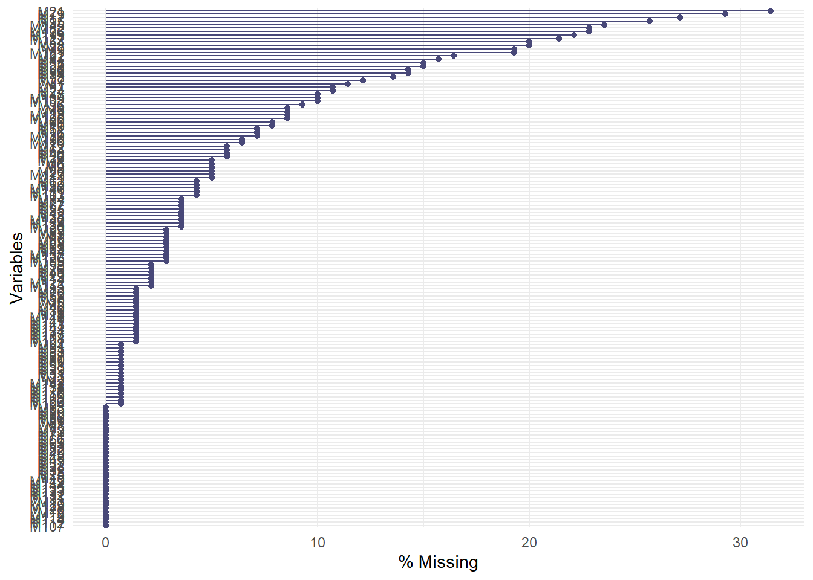
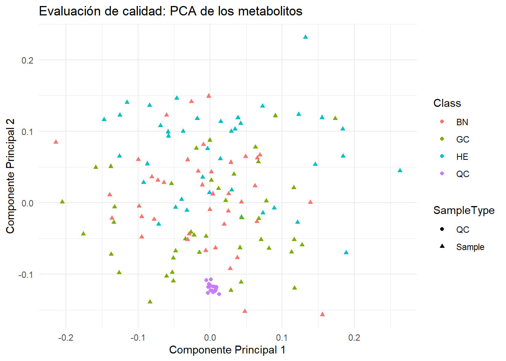
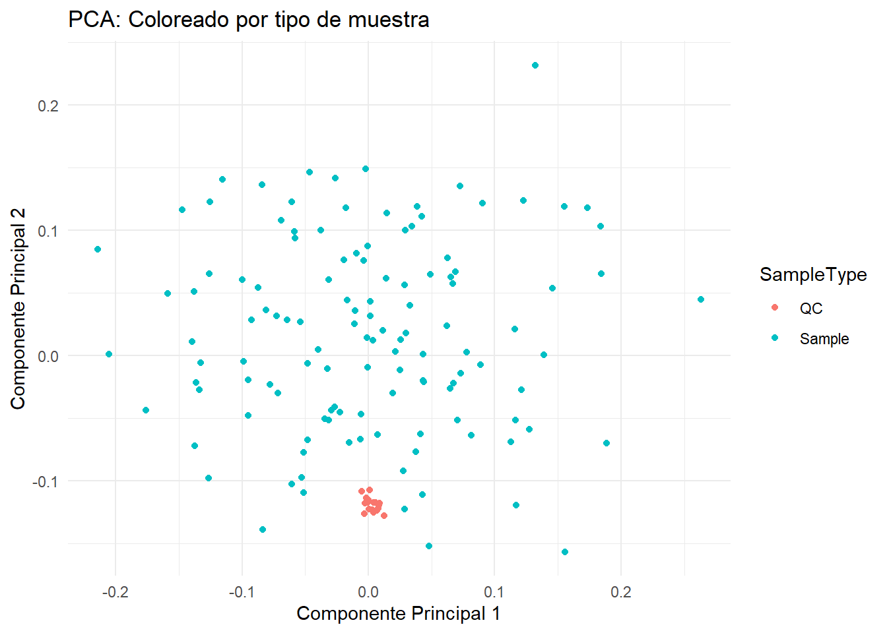
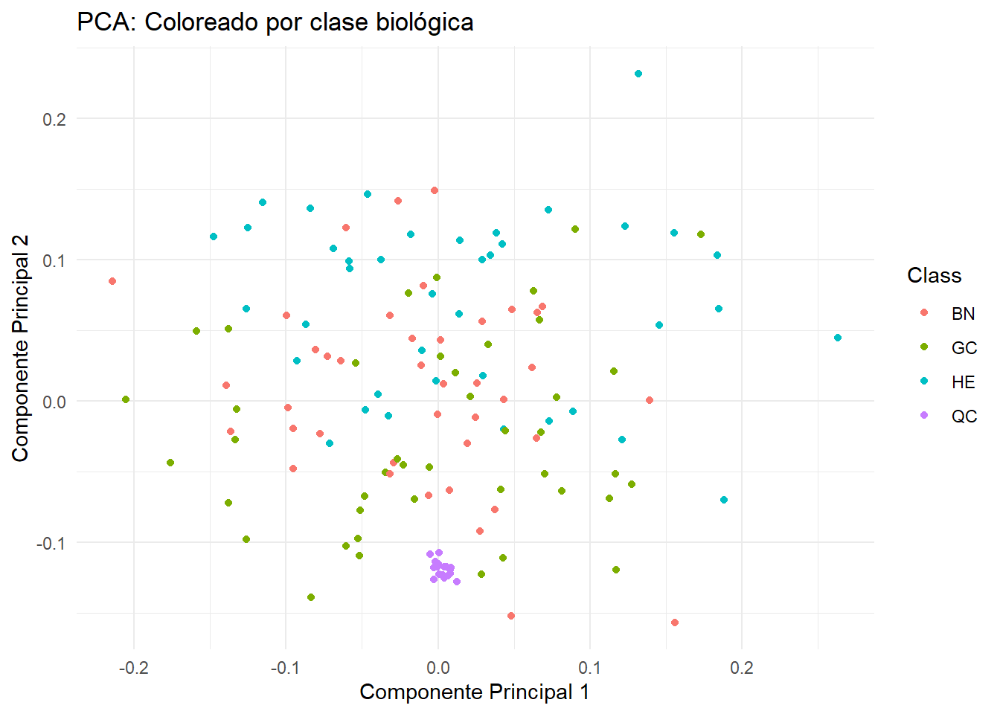

En esta actividad hemos trabajado con un dataset de metabolómica para realizar un análisis exhaustivo que incluye desde la limpieza de datos hasta la visualización y la interpretación estadística. Este informe documenta nuestro proceso y los resultados obtenidos.
1: Preparación del entorno de trabajo
Comenzaremos instalando y cargando las librerías necesarias. Para ello, ejecutaremos el siguiente código en R:
# Instalación de BiocManager si no está instaladoif (!requireNamespace("BiocManager", quietly =TRUE))install.packages("BiocManager")# Instalación de las librerías necesariasBiocManager::install(c("SummarizedExperiment", "readxl", "tidyverse", "mixOmics"))
Bioconductor version 3.20 (BiocManager 1.30.25), R 4.4.2 (2024-10-31 ucrt)
Warning: package(s) not installed when version(s) same as or greater than current; use
`force = TRUE` to re-install: 'SummarizedExperiment' 'readxl' 'tidyverse'
'mixOmics'
Installation paths not writeable, unable to update packages
path: C:/Program Files/R/R-4.4.2/library
packages:
class, cluster, KernSmooth, MASS, nnet, rpart, spatial, survival
# Carga de las libreríaslibrary(SummarizedExperiment)
The following object is masked from 'package:utils':
findMatches
The following objects are masked from 'package:base':
expand.grid, I, unname
Cargando paquete requerido: IRanges
Adjuntando el paquete: 'IRanges'
The following object is masked from 'package:grDevices':
windows
Cargando paquete requerido: GenomeInfoDb
Cargando paquete requerido: Biobase
Welcome to Bioconductor
Vignettes contain introductory material; view with
'browseVignettes()'. To cite Bioconductor, see
'citation("Biobase")', and for packages 'citation("pkgname")'.
Adjuntando el paquete: 'Biobase'
The following object is masked from 'package:MatrixGenerics':
rowMedians
The following objects are masked from 'package:matrixStats':
anyMissing, rowMedians
Cargando paquete requerido: MASS
Adjuntando el paquete: 'MASS'
The following object is masked from 'package:dplyr':
select
Cargando paquete requerido: lattice
Loaded mixOmics 6.30.0
Thank you for using mixOmics!
Tutorials: http://mixomics.org
Bookdown vignette: https://mixomicsteam.github.io/Bookdown
Questions, issues: Follow the prompts at http://mixomics.org/contact-us
Cite us: citation('mixOmics')
Adjuntando el paquete: 'mixOmics'
The following object is masked from 'package:purrr':
map
Este código instalará y cargará las librerías SummarizedExperiment para manejar datos ómicos, readxl para leer archivos Excel, tidyverse para manipulación y visualización de datos, y mixOmics para análisis multivariantes.
2: Carga y exploración inicial del dataset
Descargaremos el archivo GastricCancer_NMR.xlsx y lo guardaremos en nuestro directorio de trabajo. Luego, cargaremos las hojas de datos y picos:
# Definimos la ruta completa al archivo Excelraw_dataset <-"~/Analisis_Omicos/metaboData/Datasets/2023-CIMCBTutorial/GastricCancer_NMR.xlsx"# Leemos las hojas 'Data' y 'Peak'data <-read_excel(raw_dataset, sheet ="Data")peak <-read_excel(raw_dataset, sheet ="Peak")# Exploramos las primeras filas de cada tablahead(data)
Este código nos permitirá visualizar las primeras filas de las tablas de datos y picos, facilitando la comprensión de su estructura.
De manera que esta exploración inicial nos permitió comprender la estructura y las características generales del dataset.
3: Creación del objeto SummarizedExperiment
Creamos un contenedor que organiza los datos en un formato estructurado, combinando la matriz de expresión y los metadatos: Para crear un objeto SummarizedExperiment, necesitamos una matriz de expresión, información de las filas (metabolitos) y de las columnas (muestras). Procederemos de la siguiente manera:
# Convertimos las columnas de metabolitos en una matriz de expresión# (filas: muestras; columnas: metabolitos)expression_matrix <-as.matrix(data[, 5:ncol(data)]) rownames(expression_matrix) <- data$SampleID # Usamos la primera columna de 'data' como nombres de filacolnames(expression_matrix) <- peak$Name # Usamos la columna 'Name' de 'peak' como nombres de columna# Creamos los metadatos de las muestras (row_metadata) desde 'Data'row_metadata <- data[, 1:4] # Seleccionamos las primeras 4 columnasrownames(row_metadata) <- row_metadata$SampleID # Usamos la primera columna como nombres de fila
Warning: Setting row names on a tibble is deprecated.
row_metadata <- row_metadata[, -1] # Eliminamos la primera columna ya que es redundante# Creamos los metadatos de los metabolitos (col_metadata) desde 'Peak'col_metadata <- peak[, c("Name", "Label")] # Seleccionamos columnas relevantesrownames(col_metadata) <- col_metadata$Name # Usamos 'Name' como nombres de fila
Warning: Setting row names on a tibble is deprecated.
col_metadata <- col_metadata[, -1] # Eliminamos la columna 'Name' ya que está en los nombres de fila# Creamos el objeto SummarizedExperimentse_object <-SummarizedExperiment(assays =list(counts = expression_matrix),rowData = row_metadata, # Metadatos de las muestrascolData = col_metadata # Metadatos de los metabolitos)# Verificamos el contenido del objeto SummarizedExperimentse_object
Primero, examinamos las estadísticas descriptivas de los valores en la matriz de expresión (counts):
# Resumen estadístico básico de la matriz de expresiónsummary(assay(se_object, "counts"))
M1 M2 M3 M4
Min. : 0.40 Min. : 3.1 Min. : 0.1 Min. : 0.10
1st Qu.: 29.82 1st Qu.: 140.9 1st Qu.: 53.6 1st Qu.: 18.77
Median : 60.35 Median : 270.2 Median :105.1 Median : 35.70
Mean :101.07 Mean : 642.0 Mean :146.4 Mean : 43.83
3rd Qu.:133.38 3rd Qu.: 480.9 3rd Qu.:198.8 3rd Qu.: 51.33
Max. :909.90 Max. :26195.8 Max. :862.5 Max. :242.50
NA's :16 NA's :1 NA's :7 NA's :12
M5 M6 M7 M8
Min. : 1.3 Min. : 0.20 Min. : 4.60 Min. : 9.30
1st Qu.: 67.0 1st Qu.: 15.50 1st Qu.: 19.65 1st Qu.: 37.17
Median : 160.3 Median : 25.90 Median : 40.25 Median : 51.00
Mean : 231.1 Mean : 41.63 Mean : 74.12 Mean : 67.81
3rd Qu.: 253.1 3rd Qu.: 48.60 3rd Qu.: 65.55 3rd Qu.: 77.83
Max. :2503.0 Max. :339.40 Max. :492.60 Max. :525.00
NA's :2 NA's :7 NA's :4
M9 M10 M11 M12
Min. : 0.7 Min. : 0.1 Min. : 0.3 Min. : 1.70
1st Qu.: 20.1 1st Qu.: 38.4 1st Qu.: 47.0 1st Qu.: 31.85
Median : 42.2 Median : 80.8 Median : 82.9 Median : 50.55
Mean : 64.1 Mean : 124.8 Mean : 192.5 Mean : 69.13
3rd Qu.: 75.3 3rd Qu.: 148.0 3rd Qu.: 164.7 3rd Qu.: 83.70
Max. :612.1 Max. :2026.8 Max. :2676.3 Max. :576.20
NA's :27 NA's :11 NA's :7
M13 M14 M15 M16
Min. : 17.20 Min. : 0.20 Min. : 7.90 Min. : 3.70
1st Qu.: 79.28 1st Qu.: 30.40 1st Qu.: 28.80 1st Qu.: 43.95
Median : 108.85 Median : 50.40 Median : 44.10 Median : 90.60
Mean : 376.10 Mean : 68.75 Mean : 57.16 Mean :125.03
3rd Qu.: 223.62 3rd Qu.: 83.70 3rd Qu.: 71.08 3rd Qu.:171.68
Max. :10712.70 Max. :437.60 Max. :212.30 Max. :665.90
NA's :3 NA's :10
M17 M18 M19 M20
Min. : 0.40 Min. : 2.60 Min. : 0.40 Min. : 0.50
1st Qu.: 7.60 1st Qu.: 83.05 1st Qu.: 27.68 1st Qu.: 24.60
Median : 20.00 Median : 139.35 Median : 56.05 Median : 45.80
Mean : 39.16 Mean : 210.99 Mean : 65.75 Mean : 62.47
3rd Qu.: 63.02 3rd Qu.: 277.65 3rd Qu.: 85.55 3rd Qu.: 73.10
Max. :187.60 Max. :1236.50 Max. :217.70 Max. :341.90
NA's :38 NA's :2 NA's :12 NA's :7
M21 M22 M23 M24
Min. : 0.10 Min. : 0.30 Min. : 65.8 Min. : 0.3
1st Qu.: 12.38 1st Qu.: 18.10 1st Qu.: 233.7 1st Qu.: 34.2
Median : 30.85 Median : 37.35 Median : 395.3 Median : 95.3
Mean : 66.41 Mean : 58.26 Mean : 487.5 Mean :113.3
3rd Qu.: 70.15 3rd Qu.: 70.03 3rd Qu.: 617.4 3rd Qu.:155.2
Max. :997.20 Max. :713.50 Max. :2499.1 Max. :446.4
NA's :44 NA's :28 NA's :1 NA's :15
M25 M26 M27 M28
Min. : 0.40 Min. : 2.00 Min. : 0.40 Min. : 0.10
1st Qu.: 12.20 1st Qu.: 13.80 1st Qu.: 14.75 1st Qu.: 11.75
Median : 18.25 Median : 20.90 Median : 34.60 Median : 19.50
Mean : 24.23 Mean : 28.31 Mean : 63.19 Mean : 217.14
3rd Qu.: 28.50 3rd Qu.: 30.80 3rd Qu.: 65.30 3rd Qu.: 34.70
Max. :171.80 Max. :374.60 Max. :1062.50 Max. :14787.10
NA's :8 NA's :17 NA's :21
M29 M30 M31 M32
Min. : 4.8 Min. : 2.20 Min. : 0.20 Min. : 0.60
1st Qu.: 43.4 1st Qu.: 19.77 1st Qu.: 13.60 1st Qu.: 84.25
Median : 84.8 Median : 33.60 Median : 24.10 Median :115.95
Mean : 269.0 Mean : 92.89 Mean : 70.59 Mean :174.49
3rd Qu.: 184.4 3rd Qu.: 73.78 3rd Qu.: 61.55 3rd Qu.:218.12
Max. :4719.0 Max. :1156.80 Max. :1336.60 Max. :874.20
NA's :3 NA's :2 NA's :1
M33 M34 M35 M36
Min. : 26.8 Min. : 0.10 Min. : 0.1 Min. : 0.10
1st Qu.: 213.6 1st Qu.: 36.88 1st Qu.: 52.1 1st Qu.: 13.10
Median : 308.4 Median : 83.55 Median : 131.8 Median : 17.40
Mean : 351.8 Mean : 147.76 Mean : 497.6 Mean : 45.00
3rd Qu.: 424.4 3rd Qu.: 177.72 3rd Qu.: 333.7 3rd Qu.: 59.75
Max. :1127.6 Max. :1605.40 Max. :6596.8 Max. :305.90
NA's :20 NA's :21 NA's :13
M37 M38 M39 M40
Min. : 4.30 Min. : 9.8 Min. : 0.50 Min. : 0.80
1st Qu.: 31.38 1st Qu.: 81.3 1st Qu.: 21.90 1st Qu.: 26.95
Median : 49.05 Median : 161.6 Median : 36.10 Median : 39.20
Mean : 85.50 Mean : 261.8 Mean : 60.21 Mean : 50.87
3rd Qu.: 105.65 3rd Qu.: 311.3 3rd Qu.: 70.50 3rd Qu.: 65.35
Max. :1026.50 Max. :1632.5 Max. :913.90 Max. :204.30
NA's :5 NA's :1 NA's :2
M41 M42 M43 M44
Min. : 0.10 Min. : 12.5 Min. : 4.1 Min. : 0.30
1st Qu.: 15.60 1st Qu.: 66.8 1st Qu.: 8.3 1st Qu.: 23.35
Median : 49.60 Median :127.2 Median : 13.2 Median : 45.45
Mean : 84.33 Mean :150.8 Mean : 18.5 Mean : 67.31
3rd Qu.: 94.20 3rd Qu.:196.2 3rd Qu.: 20.7 3rd Qu.: 97.20
Max. :746.00 Max. :810.1 Max. :191.7 Max. :454.10
NA's :22 NA's :5 NA's :3 NA's :4
M45 M46 M47 M48
Min. : 49.9 Min. : 1.5 Min. : 0.10 Min. : 988
1st Qu.: 822.5 1st Qu.: 94.8 1st Qu.: 97.62 1st Qu.: 5792
Median : 1917.1 Median : 185.5 Median : 193.60 Median : 7964
Mean : 2927.8 Mean : 310.2 Mean : 324.73 Mean : 9989
3rd Qu.: 3769.2 3rd Qu.: 365.2 3rd Qu.: 454.95 3rd Qu.:12398
Max. :16673.9 Max. :3749.4 Max. :1771.30 Max. :33767
NA's :8 NA's :14
M49 M50 M51 M52
Min. : 9.6 Min. : 0.20 Min. : 2.1 Min. : 9.60
1st Qu.: 175.0 1st Qu.: 98.03 1st Qu.: 202.1 1st Qu.: 89.92
Median : 260.9 Median : 150.45 Median : 387.6 Median : 133.30
Mean : 322.1 Mean : 353.63 Mean : 466.4 Mean : 184.89
3rd Qu.: 430.6 3rd Qu.: 267.12 3rd Qu.: 516.3 3rd Qu.: 203.00
Max. :1547.1 Max. :17082.20 Max. :5732.7 Max. :3337.30
NA's :2 NA's :10
M53 M54 M55 M56
Min. : 40.2 Min. : 0.200 Min. : 0.40 Min. : 2.9
1st Qu.: 382.8 1st Qu.: 1.775 1st Qu.: 51.45 1st Qu.: 49.0
Median : 577.7 Median : 5.050 Median : 113.50 Median : 88.0
Mean : 796.8 Mean : 9.920 Mean : 507.69 Mean :103.5
3rd Qu.: 824.2 3rd Qu.:11.725 3rd Qu.: 197.35 3rd Qu.:137.3
Max. :6413.9 Max. :82.900 Max. :19704.10 Max. :367.9
NA's :28 NA's :5 NA's :9
M57 M58 M59 M60
Min. : 0.1 Min. : 15.6 Min. : 32.8 Min. : 0.2
1st Qu.: 217.2 1st Qu.: 208.1 1st Qu.: 201.9 1st Qu.: 105.7
Median : 372.4 Median : 359.5 Median : 347.2 Median : 209.3
Mean : 680.4 Mean : 579.3 Mean : 523.9 Mean : 1910.0
3rd Qu.: 611.8 3rd Qu.: 638.1 3rd Qu.: 519.1 3rd Qu.: 473.5
Max. :16077.3 Max. :6371.7 Max. :10448.2 Max. :160844.7
NA's :2 NA's :1 NA's :6 NA's :11
M61 M62 M63 M64
Min. : 1.7 Min. : 0.3 Min. : 3.7 Min. : 0.1
1st Qu.: 269.5 1st Qu.: 199.5 1st Qu.: 275.0 1st Qu.: 128.0
Median : 542.0 Median : 338.5 Median : 441.1 Median : 196.2
Mean : 727.6 Mean : 420.4 Mean : 867.9 Mean : 294.5
3rd Qu.: 851.8 3rd Qu.: 507.2 3rd Qu.: 824.8 3rd Qu.: 342.6
Max. :4920.9 Max. :1897.9 Max. :15297.4 Max. :5168.5
NA's :1 NA's :6 NA's :4 NA's :8
M65 M66 M67 M68
Min. : 25.6 Min. : 34.6 Min. : 2.5 Min. : 0.10
1st Qu.: 224.8 1st Qu.: 462.8 1st Qu.: 71.2 1st Qu.: 90.17
Median : 348.6 Median : 1112.0 Median :112.7 Median : 158.65
Mean : 533.4 Mean : 1745.7 Mean :163.2 Mean : 211.01
3rd Qu.: 702.4 3rd Qu.: 2380.1 3rd Qu.:196.2 3rd Qu.: 252.95
Max. :2432.1 Max. :16544.5 Max. :686.9 Max. :1639.00
NA's :5 NA's :4
M69 M70 M71 M72
Min. : 0.10 Min. : 1.70 Min. : 4.40 Min. : 0.30
1st Qu.: 30.05 1st Qu.: 18.15 1st Qu.: 23.00 1st Qu.: 48.85
Median : 48.45 Median : 42.25 Median : 31.35 Median :100.45
Mean : 72.98 Mean : 80.41 Mean : 47.87 Mean :139.66
3rd Qu.: 95.75 3rd Qu.: 97.33 3rd Qu.: 56.40 3rd Qu.:174.53
Max. :546.50 Max. :598.30 Max. :490.40 Max. :629.00
NA's :4 NA's :2 NA's :8
M73 M74 M75 M76
Min. : 10.10 Min. : 0.10 Min. : 21.6 Min. : 0.1
1st Qu.: 46.20 1st Qu.: 10.30 1st Qu.: 78.4 1st Qu.: 209.6
Median : 90.75 Median : 16.20 Median : 105.7 Median : 342.5
Mean : 98.43 Mean : 28.17 Mean : 165.5 Mean : 491.1
3rd Qu.:133.05 3rd Qu.: 34.40 3rd Qu.: 193.2 3rd Qu.: 610.0
Max. :366.30 Max. :171.00 Max. :1225.3 Max. :3230.2
NA's :7 NA's :3
M77 M78 M79 M80
Min. : 0.1 Min. : 0.10 Min. : 0.40 Min. : 0.4
1st Qu.: 198.4 1st Qu.: 6.60 1st Qu.: 12.90 1st Qu.: 133.2
Median : 316.0 Median : 15.60 Median : 32.40 Median : 267.1
Mean : 374.4 Mean : 25.32 Mean : 120.47 Mean : 676.3
3rd Qu.: 457.6 3rd Qu.: 33.90 3rd Qu.: 71.45 3rd Qu.: 464.7
Max. :1751.5 Max. :241.60 Max. :3504.40 Max. :27945.1
NA's :5 NA's :19 NA's :41 NA's :1
M81 M82 M83 M84
Min. : 1.2 Min. : 0.100 Min. : 0.1 Min. : 0.10
1st Qu.: 303.4 1st Qu.: 7.425 1st Qu.: 131.4 1st Qu.: 29.05
Median : 491.4 Median : 17.650 Median : 225.0 Median : 67.00
Mean : 684.4 Mean : 60.815 Mean : 601.9 Mean :110.00
3rd Qu.: 750.5 3rd Qu.: 52.625 3rd Qu.: 616.2 3rd Qu.:133.70
Max. :3849.4 Max. :1249.700 Max. :8918.0 Max. :813.00
NA's :32 NA's :2 NA's :5
M85 M86 M87 M88
Min. : 0.10 Min. : 4.70 Min. : 2.50 Min. : 0.5
1st Qu.: 19.93 1st Qu.: 42.38 1st Qu.: 16.40 1st Qu.:103.5
Median : 35.75 Median : 63.15 Median : 28.40 Median :149.6
Mean : 49.27 Mean : 94.95 Mean : 38.30 Mean :187.6
3rd Qu.: 60.80 3rd Qu.:114.72 3rd Qu.: 47.05 3rd Qu.:224.5
Max. :376.00 Max. :959.30 Max. :213.70 Max. :798.8
NA's :4 NA's :1 NA's :1
M89 M90 M91 M92
Min. : 47.4 Min. : 2.80 Min. : 4.6 Min. : 0.10
1st Qu.: 276.3 1st Qu.: 32.75 1st Qu.: 38.4 1st Qu.: 7.40
Median : 425.3 Median : 56.00 Median : 49.5 Median : 15.40
Mean : 710.1 Mean :108.09 Mean : 71.0 Mean : 24.99
3rd Qu.: 891.9 3rd Qu.:140.72 3rd Qu.: 91.6 3rd Qu.: 31.00
Max. :6317.1 Max. :748.70 Max. :337.5 Max. :169.40
NA's :1 NA's :23
M93 M94 M95 M96
Min. : 5.60 Min. : 12.9 Min. : 0.70 Min. : 0.100
1st Qu.: 39.20 1st Qu.: 124.8 1st Qu.: 18.60 1st Qu.: 8.175
Median : 65.15 Median : 241.7 Median : 44.30 Median : 9.400
Mean : 80.09 Mean : 431.7 Mean : 57.43 Mean :10.374
3rd Qu.: 97.12 3rd Qu.: 521.1 3rd Qu.: 77.97 3rd Qu.:11.300
Max. :505.60 Max. :2624.2 Max. :305.50 Max. :32.600
NA's :1 NA's :36 NA's :20
M97 M98 M99 M100
Min. : 0.7 Min. : 0.60 Min. : 0.80 Min. : 0.1
1st Qu.: 8.6 1st Qu.: 22.20 1st Qu.: 23.07 1st Qu.: 63.0
Median :11.3 Median : 42.60 Median : 49.65 Median : 132.3
Mean :13.3 Mean : 76.03 Mean : 73.64 Mean : 372.5
3rd Qu.:15.4 3rd Qu.: 81.90 3rd Qu.: 76.00 3rd Qu.: 284.8
Max. :82.0 Max. :1257.30 Max. :737.20 Max. :5188.2
NA's :15 NA's :3 NA's :4 NA's :12
M101 M102 M103 M104
Min. : 0.10 Min. : 0.10 Min. : 2.60 Min. : 0.2
1st Qu.: 18.55 1st Qu.: 50.38 1st Qu.: 80.42 1st Qu.: 185.8
Median : 29.30 Median :123.15 Median : 165.05 Median : 247.8
Mean : 43.21 Mean :144.63 Mean : 249.86 Mean : 322.7
3rd Qu.: 42.52 3rd Qu.:210.22 3rd Qu.: 317.77 3rd Qu.: 384.2
Max. :428.80 Max. :636.20 Max. :1482.80 Max. :1579.2
NA's :2 NA's :14 NA's :6 NA's :1
M105 M106 M107 M108
Min. : 0.10 Min. : 5.30 Min. : 0.4 Min. : 0.50
1st Qu.: 39.60 1st Qu.: 31.60 1st Qu.: 184.6 1st Qu.: 19.50
Median : 65.35 Median : 50.30 Median : 254.2 Median : 30.70
Mean : 173.64 Mean : 72.78 Mean : 356.1 Mean : 56.53
3rd Qu.: 177.62 3rd Qu.: 87.70 3rd Qu.: 441.6 3rd Qu.: 59.20
Max. :2182.20 Max. :598.70 Max. :2073.8 Max. :1397.20
NA's :4 NA's :1 NA's :2
M109 M110 M111 M112
Min. : 0.10 Min. : 2.30 Min. : 0.20 Min. : 18.8
1st Qu.: 27.65 1st Qu.: 38.45 1st Qu.: 12.38 1st Qu.: 95.2
Median : 40.90 Median : 68.80 Median : 30.95 Median : 179.2
Mean : 121.05 Mean : 81.15 Mean : 126.86 Mean : 253.0
3rd Qu.: 118.90 3rd Qu.:118.40 3rd Qu.: 66.35 3rd Qu.: 356.6
Max. :1045.70 Max. :359.10 Max. :6373.70 Max. :1579.1
NA's :1 NA's :9 NA's :6
M113 M114 M115 M116
Min. : 0.2 Min. : 1.00 Min. : 5.8 Min. : 0.50
1st Qu.: 57.2 1st Qu.: 66.97 1st Qu.: 43.4 1st Qu.: 13.25
Median : 133.3 Median : 110.40 Median : 108.1 Median : 26.60
Mean : 285.8 Mean : 170.49 Mean : 199.2 Mean : 36.18
3rd Qu.: 349.4 3rd Qu.: 207.90 3rd Qu.: 286.3 3rd Qu.: 38.85
Max. :2078.8 Max. :1143.40 Max. :2134.5 Max. :318.70
NA's :31 NA's :3 NA's :1
M117 M118 M119 M120
Min. : 7.90 Min. : 4.6 Min. : 10.30 Min. : 0.20
1st Qu.: 66.47 1st Qu.: 73.8 1st Qu.: 44.33 1st Qu.: 39.65
Median : 150.30 Median : 180.3 Median : 93.70 Median : 77.80
Mean : 283.70 Mean : 249.6 Mean :101.50 Mean : 94.75
3rd Qu.: 343.20 3rd Qu.: 270.5 3rd Qu.:130.12 3rd Qu.:116.70
Max. :1613.10 Max. :1434.2 Max. :526.80 Max. :934.90
NA's :2 NA's :1 NA's :5
M121 M122 M123 M124
Min. : 0.5 Min. : 1.00 Min. : 4.8 Min. : 3.3
1st Qu.: 5.7 1st Qu.: 13.30 1st Qu.: 61.7 1st Qu.: 216.4
Median : 10.3 Median : 19.30 Median : 145.6 Median : 420.0
Mean : 18.9 Mean : 26.61 Mean : 204.2 Mean : 539.3
3rd Qu.: 19.6 3rd Qu.: 33.10 3rd Qu.: 275.3 3rd Qu.: 675.1
Max. :217.2 Max. :202.20 Max. :1418.2 Max. :3789.7
NA's :27 NA's :3 NA's :7 NA's :5
M125 M126 M127 M128
Min. : 12.4 Min. : 1.90 Min. : 0.10 Min. : 0.10
1st Qu.: 114.3 1st Qu.: 22.48 1st Qu.: 22.32 1st Qu.: 82.85
Median : 190.1 Median : 37.00 Median : 49.30 Median : 257.20
Mean : 263.2 Mean : 48.96 Mean :118.89 Mean : 511.05
3rd Qu.: 321.1 3rd Qu.: 55.83 3rd Qu.:139.18 3rd Qu.: 617.12
Max. :1619.1 Max. :609.40 Max. :786.20 Max. :5959.60
NA's :4 NA's :30 NA's :12
M129 M130 M131 M132
Min. : 133.3 Min. : 0.20 Min. : 76.6 Min. : 21.4
1st Qu.: 922.1 1st Qu.: 17.25 1st Qu.: 849.3 1st Qu.: 79.8
Median :1770.3 Median : 38.00 Median :1441.5 Median : 107.3
Mean :1825.7 Mean : 63.73 Mean :1952.4 Mean : 165.7
3rd Qu.:2384.1 3rd Qu.: 58.05 3rd Qu.:2444.7 3rd Qu.: 169.4
Max. :8038.2 Max. :1188.70 Max. :8348.6 Max. :3155.4
NA's :10
M133 M134 M135 M136
Min. : 4.10 Min. : 64.6 Min. : 0.9 Min. : 0.10
1st Qu.: 33.45 1st Qu.: 445.8 1st Qu.: 798.1 1st Qu.: 10.93
Median : 53.15 Median : 746.4 Median : 1309.5 Median : 95.05
Mean : 104.90 Mean :1254.8 Mean : 3076.5 Mean : 239.51
3rd Qu.: 90.70 3rd Qu.:1329.7 3rd Qu.: 2422.4 3rd Qu.: 129.03
Max. :1894.50 Max. :8567.8 Max. :53432.0 Max. :5014.90
NA's :2 NA's :32
M137 M138 M139 M140
Min. : 0.4 Min. : 2.1 Min. : 0.10 Min. : 0.10
1st Qu.: 271.1 1st Qu.: 149.1 1st Qu.: 29.62 1st Qu.: 42.65
Median : 654.1 Median : 464.3 Median : 71.30 Median : 83.00
Mean : 1308.5 Mean : 955.7 Mean : 292.31 Mean : 248.69
3rd Qu.: 1687.0 3rd Qu.:1342.0 3rd Qu.: 146.97 3rd Qu.: 137.50
Max. :12900.8 Max. :6344.9 Max. :5569.50 Max. :6960.30
NA's :4 NA's :1 NA's :14 NA's :5
M141 M142 M143 M144
Min. : 3.00 Min. : 0.10 Min. : 0.2 Min. : 17.00
1st Qu.: 73.45 1st Qu.: 4.55 1st Qu.: 101.5 1st Qu.: 25.50
Median : 124.40 Median : 10.60 Median : 254.3 Median : 27.60
Mean : 239.77 Mean : 22.08 Mean : 737.9 Mean : 41.97
3rd Qu.: 193.32 3rd Qu.: 23.80 3rd Qu.: 532.5 3rd Qu.: 29.80
Max. :6173.90 Max. :282.90 Max. :8413.2 Max. :1251.40
NA's :2 NA's :1 NA's :2
M145 M146 M147 M148
Min. : 0.10 Min. : 0.1 Min. : 12.00 Min. : 1.00
1st Qu.: 1.95 1st Qu.: 6.3 1st Qu.: 88.67 1st Qu.: 81.25
Median : 6.00 Median : 11.1 Median :136.10 Median : 198.85
Mean : 195.79 Mean : 116.4 Mean :178.90 Mean : 329.83
3rd Qu.: 23.90 3rd Qu.: 35.6 3rd Qu.:227.50 3rd Qu.: 540.75
Max. :5479.20 Max. :4791.5 Max. :840.20 Max. :2560.30
NA's :33 NA's :6 NA's :2 NA's :2
M149
Min. : 22.1
1st Qu.:109.6
Median :175.3
Mean :179.7
3rd Qu.:223.9
Max. :502.5
Esto proporciona información como mínimos, máximos, medianas, etc., de los valores de metabolitos en las muestras.
2: Estadísticas sobre los metadatos de las muestras
# Distribución de las clases de las muestrastable(rowData(se_object)$Class)
BN GC HE QC
40 43 40 17
Esto mostrará la cantidad de muestras en cada clase (QC, GC, BN, HE)
3: Visualización de datos faltantes
Podemos visualizar los datos faltantes en la matriz de expresión para entender mejor su calidad. Utilizamos un gráfico de calor de datos faltantes:
# Instalar y cargar librería naniar si no está disponibleif (!requireNamespace("naniar", quietly =TRUE)) {install.packages("naniar")}library(naniar)# Visualización de datos faltanteslibrary(ggplot2)gg_miss_var(as.data.frame(assay(se_object, "counts")), show_pct =TRUE)

Aplicamos filtros para mejorar la calidad del dataset y realizamos una transformación logarítmica para normalizar los datos:
# Extraemos las columnas relevantes de peakrsd <- peak$QC_RSDperc_missing <- peak$Perc_missing# Filtramos los metabolitos que cumplen ambos criteriosindices_validos <-which(rsd <20& perc_missing <10)peak_table_clean <- peak[indices_validos, ]# Actualizamos la matriz de expresión con los metabolitos válidosmetabolitos_finales <- peak_table_clean$Nameexpression_matrix_final <- expression_matrix[, metabolitos_finales]
Data Cleaning
# Filtramos los metadatos de los metabolitos (colData) con los metabolitos válidoscol_metadata_final <- peak_table_clean# Creamos un nuevo objeto SummarizedExperiment con los datos filtradosse_object_filtrado <-SummarizedExperiment(assays =list(counts = expression_matrix_final),rowData =rowData(se_object),colData = col_metadata_final)# Mostramos el número de picos restantescat("Número de peaks restantes:", ncol(assay(se_object_filtrado, "counts")), "\n")
Número de peaks restantes: 52
Normalización
# Transformación logarítmica de la matriz de expresiónexpression_matrix_normalizada <-log2(assay(se_object_filtrado, "counts") +1)# Actualizamos el objeto SummarizedExperiment con los datos normalizadosse_object_normalizado <-SummarizedExperiment(assays =list(counts = expression_matrix_normalizada),rowData =rowData(se_object_filtrado),colData =colData(se_object_filtrado))# Verificamos un resumen de los datos normalizadossummary(assay(se_object_normalizado, "counts"))
M4 M5 M7 M8
Min. :0.1375 Min. : 1.202 Min. :2.485 Min. :3.365
1st Qu.:4.3056 1st Qu.: 6.087 1st Qu.:4.368 1st Qu.:5.255
Median :5.1977 Median : 7.334 Median :5.366 Median :5.700
Mean :4.9915 Mean : 7.090 Mean :5.436 Mean :5.755
3rd Qu.:5.7094 3rd Qu.: 7.989 3rd Qu.:6.055 3rd Qu.:6.301
Max. :7.9278 Max. :11.290 Max. :8.947 Max. :9.039
NA's :12 NA's :2 NA's :4
M11 M14 M15 M25
Min. : 0.3785 Min. :0.263 Min. :3.154 Min. :0.4854
1st Qu.: 5.5850 1st Qu.:4.973 1st Qu.:4.897 1st Qu.:3.7223
Median : 6.3906 Median :5.684 Median :5.495 Median :4.2668
Mean : 6.5051 Mean :5.678 Mean :5.578 Mean :4.2870
3rd Qu.: 7.3724 3rd Qu.:6.404 3rd Qu.:6.171 3rd Qu.:4.8825
Max. :11.3866 Max. :8.777 Max. :7.737 Max. :7.4330
NA's :7 NA's :3
M26 M31 M32 M33
Min. :1.585 Min. : 0.263 Min. :0.6781 Min. : 4.797
1st Qu.:3.888 1st Qu.: 3.868 1st Qu.:6.4136 1st Qu.: 7.745
Median :4.453 Median : 4.650 Median :6.8697 Median : 8.274
Mean :4.460 Mean : 4.886 Mean :6.9925 Mean : 8.195
3rd Qu.:4.991 3rd Qu.: 5.967 3rd Qu.:7.7756 3rd Qu.: 8.733
Max. :8.553 Max. :10.385 Max. :9.7735 Max. :10.140
NA's :8 NA's :1
M36 M37 M45 M48
Min. :0.1375 Min. : 2.406 Min. : 5.670 Min. : 9.95
1st Qu.:3.8176 1st Qu.: 5.017 1st Qu.: 9.685 1st Qu.:12.50
Median :4.2016 Median : 5.645 Median :10.905 Median :12.96
Mean :4.7653 Mean : 5.745 Mean :10.794 Mean :13.01
3rd Qu.:5.9247 3rd Qu.: 6.737 3rd Qu.:11.880 3rd Qu.:13.60
Max. :8.2616 Max. :10.005 Max. :14.025 Max. :15.04
NA's :13
M50 M51 M65 M66
Min. : 0.263 Min. : 1.632 Min. : 4.733 Min. : 5.154
1st Qu.: 6.630 1st Qu.: 7.666 1st Qu.: 7.819 1st Qu.: 8.857
Median : 7.242 Median : 8.602 Median : 8.450 Median :10.120
Mean : 7.270 Mean : 8.258 Mean : 8.605 Mean : 9.952
3rd Qu.: 8.066 3rd Qu.: 9.015 3rd Qu.: 9.458 3rd Qu.:11.217
Max. :14.060 Max. :12.485 Max. :11.249 Max. :14.014
NA's :2 NA's :10
M68 M71 M73 M74
Min. : 0.1375 Min. :2.433 Min. :3.472 Min. :0.1375
1st Qu.: 6.5105 1st Qu.:4.585 1st Qu.:5.561 1st Qu.:3.4983
Median : 7.3188 Median :5.016 Median :6.520 Median :4.1043
Mean : 7.0479 Mean :5.135 Mean :6.285 Mean :4.3033
3rd Qu.: 7.9884 3rd Qu.:5.841 3rd Qu.:7.067 3rd Qu.:5.1457
Max. :10.6795 Max. :8.941 Max. :8.521 Max. :7.4263
NA's :4 NA's :7
M75 M88 M89 M90
Min. : 4.498 Min. :0.585 Min. : 5.597 Min. :1.926
1st Qu.: 6.311 1st Qu.:6.707 1st Qu.: 8.115 1st Qu.:5.077
Median : 6.737 Median :7.235 Median : 8.736 Median :5.833
Mean : 6.958 Mean :7.183 Mean : 8.909 Mean :6.069
3rd Qu.: 7.602 3rd Qu.:7.817 3rd Qu.: 9.802 3rd Qu.:7.147
Max. :10.260 Max. :9.643 Max. :12.625 Max. :9.550
NA's :1
M91 M93 M101 M104
Min. :2.485 Min. :2.722 Min. :0.1375 Min. : 0.263
1st Qu.:5.300 1st Qu.:5.329 1st Qu.:4.2891 1st Qu.: 7.545
Median :5.658 Median :6.048 Median :4.9212 Median : 7.959
Mean :5.813 Mean :6.007 Mean :4.9418 Mean : 7.905
3rd Qu.:6.533 3rd Qu.:6.616 3rd Qu.:5.4438 3rd Qu.: 8.589
Max. :8.403 Max. :8.985 Max. :8.7475 Max. :10.626
NA's :1 NA's :2 NA's :1
M105 M106 M107 M110
Min. : 0.1375 Min. :2.655 Min. : 0.4854 Min. :1.722
1st Qu.: 5.3434 1st Qu.:5.027 1st Qu.: 7.5360 1st Qu.:5.302
Median : 6.0516 Median :5.681 Median : 7.9952 Median :6.125
Mean : 6.3212 Mean :5.727 Mean : 7.9812 Mean :5.876
3rd Qu.: 7.4808 3rd Qu.:6.471 3rd Qu.: 8.7898 3rd Qu.:6.900
Max. :11.0922 Max. :9.228 Max. :11.0188 Max. :8.492
NA's :4 NA's :1 NA's :9
M115 M116 M118 M119
Min. : 2.766 Min. :0.585 Min. : 2.485 Min. :3.498
1st Qu.: 5.472 1st Qu.:3.833 1st Qu.: 6.225 1st Qu.:5.502
Median : 6.770 Median :4.787 Median : 7.502 Median :6.565
Mean : 6.679 Mean :4.612 Mean : 7.282 Mean :6.295
3rd Qu.: 8.166 3rd Qu.:5.316 3rd Qu.: 8.085 3rd Qu.:7.035
Max. :11.060 Max. :8.321 Max. :10.487 Max. :9.044
NA's :3 NA's :1 NA's :1
M120 M122 M126 M129
Min. :0.263 Min. :1.000 Min. :1.536 Min. : 7.069
1st Qu.:5.345 1st Qu.:3.838 1st Qu.:4.553 1st Qu.: 9.850
Median :6.300 Median :4.343 Median :5.248 Median :10.791
Mean :5.944 Mean :4.407 Mean :5.093 Mean :10.543
3rd Qu.:6.879 3rd Qu.:5.092 3rd Qu.:5.828 3rd Qu.:11.220
Max. :9.870 Max. :7.667 Max. :9.254 Max. :12.973
NA's :5 NA's :3 NA's :4
M130 M134 M137 M138
Min. : 0.263 Min. : 6.036 Min. : 0.4854 Min. : 1.632
1st Qu.: 4.187 1st Qu.: 8.803 1st Qu.: 8.0881 1st Qu.: 7.230
Median : 5.285 Median : 9.545 Median : 9.3552 Median : 8.862
Mean : 5.076 Mean : 9.638 Mean : 9.2956 Mean : 8.671
3rd Qu.: 5.884 3rd Qu.:10.378 3rd Qu.:10.7211 3rd Qu.:10.391
Max. :10.216 Max. :13.065 Max. :13.6553 Max. :12.632
NA's :10 NA's :2 NA's :4 NA's :1
M142 M144 M148 M149
Min. :0.1375 Min. : 4.170 Min. : 1.000 Min. :4.530
1st Qu.:2.4724 1st Qu.: 4.728 1st Qu.: 6.362 1st Qu.:6.790
Median :3.5361 Median : 4.838 Median : 7.643 Median :7.462
Mean :3.6681 Mean : 4.993 Mean : 7.517 Mean :7.252
3rd Qu.:4.6323 3rd Qu.: 4.945 3rd Qu.: 9.081 3rd Qu.:7.813
Max. :8.1492 Max. :10.290 Max. :11.323 Max. :8.976
NA's :1 NA's :2
# Verificamos si hay valores faltantes o infinitosany(is.na(expression_matrix_normalizada)) # Valores NA
# Creamos una lista de los nombres de los metabolitospeaklist <-colnames(assay(se_object_filtrado, "counts"))# Extraemos los valores de los metabolitos de los datos limpiosX <-assay(se_object_filtrado, "counts")# Transformamos los valores utilizando log2Xlog <-log2(X +1)# Escalamos los datos para normalizar la varianzaXscale <-scale(Xlog)# Imputamos los valores faltantes utilizando el método k-NN con 3 vecinos# Instalamos el paquete impute desde BioconductorBiocManager::install("impute")
Bioconductor version 3.20 (BiocManager 1.30.25), R 4.4.2 (2024-10-31 ucrt)
Warning: package(s) not installed when version(s) same as or greater than current; use
`force = TRUE` to re-install: 'impute'
Installation paths not writeable, unable to update packages
path: C:/Program Files/R/R-4.4.2/library
packages:
class, cluster, KernSmooth, MASS, nnet, rpart, spatial, survival
# Cargamos el paquetelibrary(impute)Xknn <-impute.knn(Xscale, k =3)$data# Realizamos el análisis PCA con la matriz de datos imputadospca <-prcomp(Xknn, scale. =FALSE)# Visualizamos los resultados del PCA, coloreando por clase y tipo de muestraif (!requireNamespace("ggfortify", quietly =TRUE)) install.packages("ggfortify")library(ggfortify)autoplot(pca, data =as.data.frame(rowData(se_object_filtrado)),colour ="Class", shape ="SampleType") +labs(title ="Evaluación de calidad: PCA de los metabolitos",x ="Componente Principal 1",y ="Componente Principal 2") +theme_minimal()

Generamos gráficos de PCA para explorar la agrupación de las muestras, viendo que el grupo de control aparece agrupado como es de esperar en este dataset.
# Gráfico PCA coloreado por SampleTypepca_plot_sampletype <-autoplot(pca, data =as.data.frame(rowData(se_object_filtrado)),colour ="SampleType") +labs(title ="PCA: Coloreado por tipo de muestra",x ="Componente Principal 1",y ="Componente Principal 2") +theme_minimal()# Gráfico PCA coloreado por Classpca_plot_class <-autoplot(pca, data =as.data.frame(rowData(se_object_filtrado)),colour ="Class") +labs(title ="PCA: Coloreado por clase biológica",x ="Componente Principal 1",y ="Componente Principal 2") +theme_minimal()# Mostramos ambos gráficospca_plot_sampletype

pca_plot_class

Filtramos las clases GC y HE para realizar un análisis estadístico:
# Filtramos las filas para incluir solo GC y HEdata_gc_he <-as.data.frame(rowData(se_object_filtrado)) # Aseguramos que sea un data.framedata_gc_he <- data_gc_he[data_gc_he$Class %in%c("GC", "HE"), ] # Filtramos las clases GC y HE# Verificamos si hay muestras seleccionadasif (nrow(data_gc_he) ==0) {stop("No se encontraron muestras de las clases 'GC' o 'HE'. Verifica los datos.")}# Identificamos las muestras seleccionadassamples_gc_he <-rownames(data_gc_he)# Filtramos la matriz de expresión para estas muestrasX_gc_he <-assay(se_object_filtrado, "counts")[samples_gc_he, , drop =FALSE] # drop = FALSE asegura una matriz si hay una sola muestra# Extraemos las clases asociadas a estas muestrasgroups_gc_he <- data_gc_he$Class # Usamos el data.frame filtrado
# Función para realizar pruebas estadísticas univariantesunivariate_stats <-function(data, groups, parametric =TRUE) { stats <-apply(data, 2, function(x) {# Dividimos los valores según el grupo group1 <- x[groups =="GC"] group2 <- x[groups =="HE"]# Calculamos estadísticas básicas mean1 <-mean(group1, na.rm =TRUE) mean2 <-mean(group2, na.rm =TRUE) p_missing1 <-sum(is.na(group1)) /length(group1) *100 p_missing2 <-sum(is.na(group2)) /length(group2) *100# Prueba estadística (paramétrica o no paramétrica)if (parametric) { ttest <-t.test(group1, group2) p_value <- ttest$p.value } else { wilcox <-wilcox.test(group1, group2) p_value <- wilcox$p.value }# Normalidad (Shapiro-Wilk) shapiro1 <-if (length(group1) >=3) shapiro.test(group1)$p.value elseNA shapiro2 <-if (length(group2) >=3) shapiro.test(group2)$p.value elseNA# Creamos una fila con los resultadosc(mean_GC = mean1, mean_HE = mean2,p_missing_GC = p_missing1, p_missing_HE = p_missing2,p_value = p_value,shapiro_GC = shapiro1, shapiro_HE = shapiro2 ) })# Convertimos los resultados a un data.frameas.data.frame(t(stats))}# Verificamos el contenido de groups_gc_heunique(groups_gc_he)
[1] "GC" "HE"
# Contamos las muestras en cada grupotable(groups_gc_he)
groups_gc_he
GC HE
43 40
# Resumen de la matriz X_gc_hesummary(X_gc_he)
M4 M5 M7 M8
Min. : 1.60 Min. : 1.30 Min. : 8.60 Min. : 9.30
1st Qu.: 14.68 1st Qu.: 53.85 1st Qu.: 16.73 1st Qu.: 26.80
Median : 27.65 Median : 140.80 Median : 40.80 Median : 51.20
Mean : 39.45 Mean : 219.24 Mean : 87.83 Mean : 66.38
3rd Qu.: 53.48 3rd Qu.: 268.85 3rd Qu.: 93.22 3rd Qu.: 87.55
Max. :144.80 Max. :2503.00 Max. :492.60 Max. :281.10
NA's :9 NA's :1
M11 M14 M15 M25
Min. : 0.30 Min. : 0.50 Min. : 7.90 Min. : 0.40
1st Qu.: 39.75 1st Qu.: 31.60 1st Qu.: 26.75 1st Qu.: 11.25
Median : 96.80 Median : 50.60 Median : 48.70 Median : 17.10
Mean : 186.69 Mean : 72.58 Mean : 60.32 Mean : 25.64
3rd Qu.: 206.43 3rd Qu.: 86.40 3rd Qu.: 73.10 3rd Qu.: 32.20
Max. :1688.20 Max. :437.60 Max. :212.30 Max. :171.80
NA's :3 NA's :2
M26 M31 M32 M33
Min. : 2.00 Min. : 0.30 Min. : 0.60 Min. : 36.7
1st Qu.: 10.60 1st Qu.: 11.85 1st Qu.: 81.35 1st Qu.: 196.2
Median : 21.20 Median : 29.10 Median :123.70 Median : 310.2
Mean : 31.49 Mean : 69.23 Mean :183.33 Mean : 373.5
3rd Qu.: 35.55 3rd Qu.: 66.60 3rd Qu.:225.70 3rd Qu.: 477.0
Max. :374.60 Max. :1336.60 Max. :874.20 Max. :1127.6
NA's :8
M36 M37 M45 M48
Min. : 0.20 Min. : 4.30 Min. : 69.8 Min. : 988
1st Qu.: 13.80 1st Qu.: 26.15 1st Qu.: 1180.0 1st Qu.: 4769
Median : 31.00 Median : 54.00 Median : 2213.0 Median : 8012
Mean : 49.51 Mean : 86.62 Mean : 3467.6 Mean :10241
3rd Qu.: 68.60 3rd Qu.:118.05 3rd Qu.: 4904.4 3rd Qu.:13694
Max. :305.90 Max. :520.70 Max. :16673.9 Max. :33767
NA's :10
M50 M51 M65 M66
Min. : 0.20 Min. : 2.5 Min. : 25.6 Min. : 34.6
1st Qu.: 97.75 1st Qu.: 175.1 1st Qu.: 208.4 1st Qu.: 321.9
Median : 165.60 Median : 311.8 Median : 365.6 Median : 1023.6
Mean : 269.79 Mean : 404.2 Mean : 527.3 Mean : 1708.1
3rd Qu.: 286.75 3rd Qu.: 527.6 3rd Qu.: 710.6 3rd Qu.: 1925.8
Max. :4037.50 Max. :1534.3 Max. :2432.1 Max. :16544.5
NA's :7
M68 M71 M73 M74
Min. : 0.10 Min. : 4.40 Min. : 10.10 Min. : 0.10
1st Qu.: 57.25 1st Qu.: 15.20 1st Qu.: 38.70 1st Qu.: 10.30
Median :166.90 Median : 32.90 Median : 79.20 Median : 20.00
Mean :201.91 Mean : 52.68 Mean : 90.63 Mean : 31.80
3rd Qu.:265.50 3rd Qu.: 65.40 3rd Qu.:133.50 3rd Qu.: 35.85
Max. :753.50 Max. :490.40 Max. :260.00 Max. :171.00
NA's :4 NA's :4
M75 M88 M89 M90
Min. : 21.60 Min. : 0.5 Min. : 47.4 Min. : 2.80
1st Qu.: 71.65 1st Qu.: 80.6 1st Qu.: 230.9 1st Qu.: 32.55
Median :105.00 Median :155.4 Median : 457.1 Median : 63.30
Mean :158.36 Mean :184.0 Mean : 683.0 Mean :104.91
3rd Qu.:197.40 3rd Qu.:261.4 3rd Qu.: 870.7 3rd Qu.:140.25
Max. :650.70 Max. :718.9 Max. :3712.3 Max. :514.20
M91 M93 M101 M104
Min. : 6.50 Min. : 5.60 Min. : 0.10 Min. : 0.2
1st Qu.: 35.05 1st Qu.: 36.00 1st Qu.: 17.10 1st Qu.: 131.8
Median : 51.45 Median : 58.90 Median : 29.60 Median : 248.9
Mean : 76.70 Mean : 75.27 Mean : 45.43 Mean : 320.4
3rd Qu.:104.08 3rd Qu.:112.10 3rd Qu.: 53.60 3rd Qu.: 421.2
Max. :337.50 Max. :222.90 Max. :230.60 Max. :1579.2
NA's :1 NA's :2 NA's :1
M105 M106 M107 M110
Min. : 0.1 Min. : 5.30 Min. : 0.4 Min. : 2.30
1st Qu.: 37.4 1st Qu.: 31.75 1st Qu.: 131.9 1st Qu.: 31.30
Median : 73.0 Median : 52.30 Median : 292.5 Median : 55.85
Mean : 203.9 Mean : 71.73 Mean : 369.4 Mean : 73.52
3rd Qu.: 195.8 3rd Qu.: 86.90 3rd Qu.: 514.7 3rd Qu.: 92.28
Max. :2182.2 Max. :321.20 Max. :1350.7 Max. :359.10
NA's :4 NA's :9
M115 M116 M118 M119
Min. : 5.80 Min. : 1.70 Min. : 4.60 Min. : 10.30
1st Qu.: 29.30 1st Qu.: 11.62 1st Qu.: 60.85 1st Qu.: 38.85
Median : 78.85 Median : 21.35 Median : 145.35 Median : 83.40
Mean : 210.69 Mean : 32.76 Mean : 231.60 Mean : 92.53
3rd Qu.: 258.32 3rd Qu.: 37.98 3rd Qu.: 262.38 3rd Qu.:117.65
Max. :2134.50 Max. :246.80 Max. :1434.20 Max. :526.80
NA's :1 NA's :1 NA's :1
M120 M122 M126 M129
Min. : 0.20 Min. : 2.80 Min. : 1.90 Min. : 133.3
1st Qu.: 31.80 1st Qu.: 10.95 1st Qu.: 20.00 1st Qu.: 811.2
Median : 62.60 Median : 20.80 Median : 40.30 Median :1356.6
Mean : 94.36 Mean : 26.82 Mean : 56.71 Mean :1824.5
3rd Qu.:133.70 3rd Qu.: 36.35 3rd Qu.: 62.20 3rd Qu.:2474.2
Max. :934.90 Max. :158.60 Max. :609.40 Max. :8038.2
NA's :5 NA's :2
M130 M134 M137 M138
Min. : 0.20 Min. : 64.6 Min. : 0.4 Min. : 2.1
1st Qu.: 15.80 1st Qu.: 416.4 1st Qu.: 228.3 1st Qu.: 113.6
Median : 32.95 Median : 770.1 Median : 429.3 Median : 389.9
Mean : 78.31 Mean :1372.4 Mean : 1055.2 Mean : 955.9
3rd Qu.: 66.67 3rd Qu.:1562.0 3rd Qu.: 1040.4 3rd Qu.:1522.1
Max. :1188.70 Max. :8567.8 Max. :12900.8 Max. :6084.5
NA's :9 NA's :1 NA's :3 NA's :1
M142 M144 M148 M149
Min. : 0.10 Min. : 17.00 Min. : 1.0 Min. : 22.1
1st Qu.: 3.70 1st Qu.: 25.45 1st Qu.: 78.0 1st Qu.: 81.7
Median : 9.70 Median : 27.10 Median : 144.1 Median :145.8
Mean : 19.86 Mean : 34.32 Mean : 293.7 Mean :167.7
3rd Qu.: 21.75 3rd Qu.: 29.95 3rd Qu.: 390.7 3rd Qu.:226.8
Max. :182.30 Max. :191.40 Max. :2560.3 Max. :490.2
NA's :1 NA's :2
# Verificamos si hay filas o columnas completamente vacíasrowSums(is.na(X_gc_he))